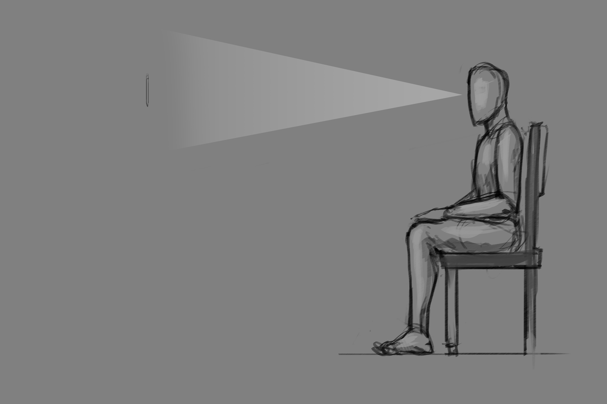

SENSORY PERCEPTION


THE SENSORY PERCEPTION EXERCISES WILL HELP YOU PUT YOUR THOUGHTS ON STEROIDS. YOU PUT YOUR THOUGHTS ON STEROIDS BY INCLUDING THE 5 SENSES IN YOUR VISUALIZATION PROCESS. BY SEEING THE CLEAR PICTURE OF YOUR DESIRES AND ASPIRATIONS YOU GIVE THEM LIFE AND INCREASE THE CHANCES OF MANIFESTING THEM.
" SIGHT "
-TAKE THE PEN OR PENCIL AND EXAMINE ALL THE DETAILS CAREFULLY FOR A FEW MINUTES.
-WHEN YOU FEEL THAT YOU HAVE REGISTERED ALL THE DETAILS, TRY TO RECREATE THE PEN OR PENCIL WITH YOUR MIND'S EYE.
-DO THIS FOR FIVE MINUTES AT A TIME, AND CONTINUE THIS PRACTICE ON A DAILY BASIS UNTIL YOU REACH FIFTEEN MINUTES.
05:00